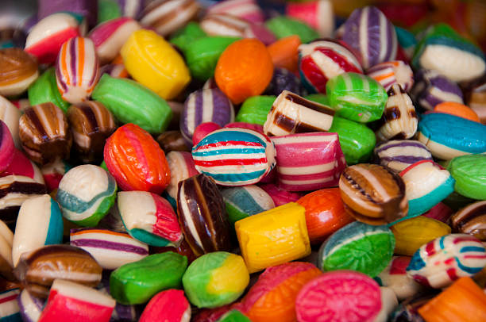
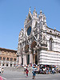

This is a short ch.... of my visit to Italy. Click on the thumbnails to see a lager view of each photograph.Enjoy!
Pozzarello
 The house we stayed in was called Pozzarello and it was built around
the year 1200 as the home of the gardner who teaded the grounds of...
The house we stayed in was called Pozzarello and it was built around
the year 1200 as the home of the gardner who teaded the grounds of...
The Tuscan Countryside
 This is the scene on the wat to Montalcino(all roads lead to...)
This is the scene on the wat to Montalcino(all roads lead to...)
Sienna
 The closest city to our ville was
Sienna, about 30 minutes away. We spent manu days exploring the seep and crooked
streets.
The closest city to our ville was
Sienna, about 30 minutes away. We spent manu days exploring the seep and crooked
streets.
Sweets
Candies are a food in the form of tablets and bars that contain the main ingredient of sugar. The term is also collectively known as confectionery, which includes any type of sweet candy, including chocolate, chewing gum, and sugar candy. Vegetables and nuts that are fermented and covered with sugar are called fruit candies
Cathedral
The cathedral, also known as the cathedral, is the main church of a diocese or archdiocese in the Christian Churches, where either the Episcopal Court or the Archbishop's Office govern it.
Lavender
 Lavender is a plant of the genus Lavender, the Lips
family. Lavender is an annual shrub with a strong aroma, originating from the Mediterranean region. Its scientific name Lavendula,
from Latin lavare, means washing. Lavender has been known for thousands of years, since ancient Greece.
Lavender is a plant of the genus Lavender, the Lips
family. Lavender is an annual shrub with a strong aroma, originating from the Mediterranean region. Its scientific name Lavendula,
from Latin lavare, means washing. Lavender has been known for thousands of years, since ancient Greece.